The TikZ and PGF Packages
Manual for version 3.1.9a
The Basic Layer
100 Specifying Coordinates
100.1 Overview¶
Most pgf commands expect you to provide the coordinates of a point (also called coordinate) inside your picture. Points are always “local” to your picture, that is, they never refer to an absolute position on the page, but to a position inside the current {pgfpicture} environment. To specify a coordinate you can use commands that start with \pgfpoint.
100.2 Basic Coordinate Commands¶
The following commands are the most basic for specifying a coordinate.
\pgfpoint{⟨x coordinate⟩}{⟨y coordinate⟩} ¶
Yields a point location. The coordinates are given as TeX dimensions.
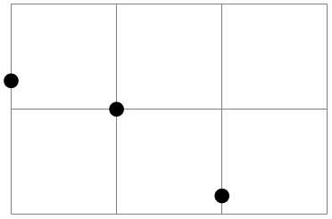
\begin{tikzpicture}
\draw[help lines] (0,0) grid
(3,2);
\pgfpathcircle{\pgfpoint{1cm}{1cm}} {2pt}
\pgfpathcircle{\pgfpoint{2cm}{5pt}} {2pt}
\pgfpathcircle{\pgfpoint{0pt}{.5in}}{2pt}
\pgfusepath{fill}
\end{tikzpicture}
\pgfpointorigin ¶
Yields the origin. Same as \pgfpoint{0pt}{0pt}.
\pgfpointpolar{⟨degree⟩}{⟨radius⟩/⟨y-radius⟩} ¶
Yields a point location given in polar coordinates. You can specify the angle only in degrees, radians are not supported, currently.
If the optional ⟨y-radius⟩ is given, the polar coordinate is actually a coordinate on an ellipse whose \(x\)-radius is given by ⟨radius⟩ and whose \(y\)-radius is given by ⟨y-radius⟩.
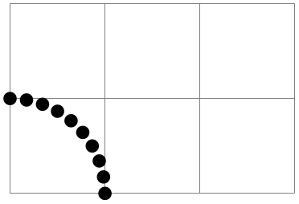
\begin{tikzpicture}
\draw[help lines] (0,0) grid
(3,2);
\foreach \angle in
{0,10,...,90}
{\pgfpathcircle{\pgfpointpolar{\angle}{1cm}}{2pt}}
\pgfusepath{fill}
\end{tikzpicture}
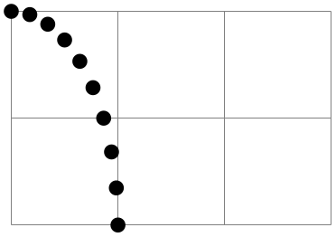
\begin{tikzpicture}
\draw[help lines] (0,0) grid
(3,2);
\foreach \angle in
{0,10,...,90}
{\pgfpathcircle{\pgfpointpolar{\angle}{1cm
and
2cm}}{2pt}}
\pgfusepath{fill}
\end{tikzpicture}
100.3 Coordinates in the XY-Coordinate System¶
Coordinates can also be specified as multiples of an \(x\)-vector and a \(y\)-vector. Normally, the \(x\)-vector points one centimeter in the \(x\)-direction and the \(y\)-vector points one centimeter in the \(y\)-direction, but using the commands \pgfsetxvec and \pgfsetyvec they can be changed. Note that the \(x\)- and \(y\)-vector do not necessarily point “horizontally” and “vertically”.
\pgfpointxy{⟨\(s_x\)⟩}{⟨\(s_y\)⟩} ¶
Yields a point that is situated at \(s_x\) times the \(x\)-vector plus \(s_y\) times the \(y\)-vector.
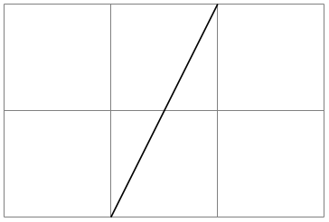
\begin{tikzpicture}
\draw[help lines] (0,0) grid
(3,2);
\pgfpathmoveto{\pgfpointxy{1}{0}}
\pgfpathlineto{\pgfpointxy{2}{2}}
\pgfusepath{stroke}
\end{tikzpicture}
\pgfsetxvec{⟨point⟩} ¶
Sets that current \(x\)-vector for usage in the \(xyz\)-coordinate system.
Example:
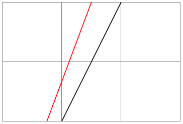
\begin{tikzpicture}
\draw[help lines] (0,0) grid
(3,2);
\pgfpathmoveto{\pgfpointxy{1}{0}}
\pgfpathlineto{\pgfpointxy{2}{2}}
\pgfusepath{stroke}
\color{red}
\pgfsetxvec{\pgfpoint{0.75cm}{0cm}}
\pgfpathmoveto{\pgfpointxy{1}{0}}
\pgfpathlineto{\pgfpointxy{2}{2}}
\pgfusepath{stroke}
\end{tikzpicture}
\pgfsetyvec{⟨point⟩} ¶
Works like \pgfsetxvec.
\pgfpointpolarxy{⟨degree⟩}{⟨radius⟩/⟨y-radius⟩} ¶
This command is similar to the \pgfpointpolar command, but the ⟨radius⟩ is now a factor to be interpreted in the \(xy\)-coordinate system. This means that a degree of 0 is the same as the \(x\)-vector of the \(xy\)-coordinate system times ⟨radius⟩ and a degree of 90 is the \(y\)-vector times ⟨radius⟩. As for \pgfpointpolar, a ⟨radius⟩ can also be a pair separated by a slash. In this case, the \(x\)- and \(y\)-vectors are multiplied by different factors.
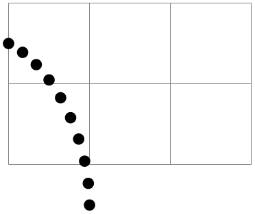
\begin{tikzpicture}
\draw[help lines] (0,0) grid
(3,2);
\begin{scope}[x={(1cm,-5mm)},y=1.5cm]
\foreach \angle in
{0,10,...,90}
{\pgfpathcircle{\pgfpointpolarxy{\angle}{1}}{2pt}}
\pgfusepath{fill}
\end{scope}
\end{tikzpicture}
100.4 Three Dimensional Coordinates¶
It is also possible to specify a point as a multiple of three vectors, the \(x\)-, \(y\)-, and \(z\)-vector. This is useful for creating simple three dimensional graphics.
\pgfpointxyz{⟨\(s_x\)⟩}{⟨\(s_y\)⟩}{⟨\(s_z\)⟩} ¶
Yields a point that is situated at \(s_x\) times the \(x\)-vector plus \(s_y\) times the \(y\)-vector plus \(s_z\) times the \(z\)-vector.
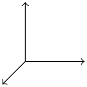
\begin{pgfpicture}
\pgfsetarrowsend{to}
\pgfpathmoveto{\pgfpointorigin}
\pgfpathlineto{\pgfpointxyz{0}{0}{1}}
\pgfusepath{stroke}
\pgfpathmoveto{\pgfpointorigin}
\pgfpathlineto{\pgfpointxyz{0}{1}{0}}
\pgfusepath{stroke}
\pgfpathmoveto{\pgfpointorigin}
\pgfpathlineto{\pgfpointxyz{1}{0}{0}}
\pgfusepath{stroke}
\end{pgfpicture}
\pgfsetzvec{⟨point⟩} ¶
Works like \pgfsetxvec.
Inside the \(xyz\)-coordinate system, you can also specify points using spherical and cylindrical coordinates.
\pgfpointcylindrical{⟨degree⟩}{⟨radius⟩}{⟨height⟩} ¶
This command yields the same as
\pgfpointadd{\pgfpointpolarxy{degree}{radius}}{\pgfpointxyz{0}{0}{height}}
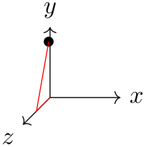
\begin{tikzpicture}
\draw [->] (0,0) --
(1,0,0) node
[right] {$x$};
\draw [->] (0,0) --
(0,1,0) node
[above] {$y$};
\draw [->] (0,0) --
(0,0,1) node
[below left] {$z$};
\pgfpathcircle{\pgfpointcylindrical{80}{1}{.5}}{2pt}
\pgfusepath{fill}
\draw[red] (0,0) --
(0,0,.5) --
+(80:1);
\end{tikzpicture}
\pgfpointspherical{⟨longitude⟩}{⟨latitude⟩}{⟨radius⟩} ¶
This command yields a point “on the surface of the earth” specified by the ⟨longitude⟩ and the ⟨latitude⟩. The radius of the earth is given by ⟨radius⟩. The equator lies in the \(xy\)-plane.
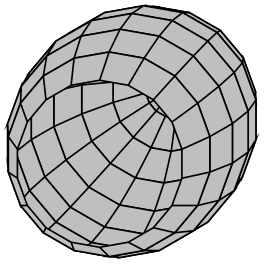
\begin{tikzpicture}
\pgfsetfillcolor{lightgray}
\foreach \latitude in
{-90,-75,...,30}
{
\foreach \longitude in
{0,20,...,360}
{
\pgfpathmoveto{\pgfpointspherical{\longitude}{\latitude}{1}}
\pgfpathlineto{\pgfpointspherical{\longitude+20}{\latitude}{1}}
\pgfpathlineto{\pgfpointspherical{\longitude+20}{\latitude+15}{1}}
\pgfpathlineto{\pgfpointspherical{\longitude}{\latitude+15}{1}}
\pgfpathclose
}
\pgfusepath{fill,stroke}
}
\end{tikzpicture}
100.5 Building Coordinates From Other Coordinates¶
Many commands allow you to construct a coordinate in terms of other coordinates.
100.5.1 Basic Manipulations of Coordinates¶
\pgfpointadd{⟨\(v_1\)⟩}{⟨\(v_2\)⟩} ¶
Returns the sum vector \(\meta {$v_1$} + \meta {$v_2$}\).
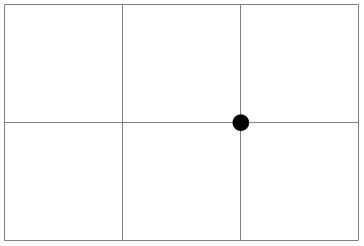
\begin{tikzpicture}
\draw[help lines] (0,0) grid
(3,2);
\pgfpathcircle{\pgfpointadd{\pgfpoint{1cm}{0cm}}{\pgfpoint{1cm}{1cm}}}{2pt}
\pgfusepath{fill}
\end{tikzpicture}
\pgfpointscale{⟨factor⟩}{⟨coordinate⟩} ¶
Returns the vector \(\meta {factor}\meta {coordinate}\).
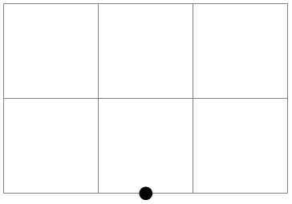
\begin{tikzpicture}
\draw[help lines] (0,0) grid
(3,2);
\pgfpathcircle{\pgfpointscale{1.5}{\pgfpoint{1cm}{0cm}}}{2pt}
\pgfusepath{fill}
\end{tikzpicture}
\pgfpointdiff{⟨start⟩}{⟨end⟩} ¶
Returns the difference vector \(\meta {end} - \meta {start}\).
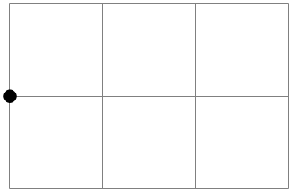
\begin{tikzpicture}
\draw[help lines] (0,0) grid
(3,2);
\pgfpathcircle{\pgfpointdiff{\pgfpoint{1cm}{0cm}}{\pgfpoint{1cm}{1cm}}}{2pt}
\pgfusepath{fill}
\end{tikzpicture}
\pgfpointnormalised{⟨point⟩} ¶
This command returns a normalised version of ⟨point⟩, that is, a vector of length 1pt pointing in the direction of ⟨point⟩. If ⟨point⟩ is the \(0\)-vector or extremely short, a vector of length 1pt pointing upwards is returned.
This command is not implemented by calculating the length of the vector, but rather by calculating the angle of the vector and then using (something equivalent to) the \pgfpointpolar command. This ensures that the point will really have length 1pt, but it is not guaranteed that the vector will precisely point in the direction of ⟨point⟩ due to the fact that the polar tables are accurate only up to one degree. Normally, this is not a problem.
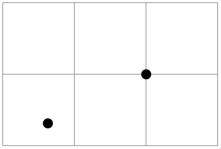
\begin{tikzpicture}
\draw[help lines] (0,0) grid
(3,2);
\pgfpathcircle{\pgfpoint{2cm}{1cm}}{2pt}
\pgfpathcircle{\pgfpointscale{20}
{\pgfpointnormalised{\pgfpoint{2cm}{1cm}}}}{2pt}
\pgfusepath{fill}
\end{tikzpicture}
100.5.2 Points Traveling along Lines and Curves¶
The commands in this section allow you to specify points on a line or a curve. Imagine a point “traveling” along a curve from some point \(p\) to another point \(q\). At time \(t=0\) the point is at \(p\) and at time \(t=1\) it is at \(q\) and at time, say, \(t=1/2\) it is “somewhere in the middle”. The exact location at time \(t=1/2\) will not necessarily be the “halfway point”, that is, the point whose distance on the curve from \(p\) and \(q\) is equal. Rather, the exact location will depend on the “speed” at which the point is traveling, which in turn depends on the lengths of the support vectors in a complicated manner. If you are interested in the details, please see a good book on Bézier curves.
\pgfpointlineattime{⟨time \(t\)⟩}{⟨point \(p\)⟩}{⟨point \(q\)⟩} ¶
Yields a point that is the \(t\)th fraction between \(p\) and \(q\), that is, \(p + t(q-p)\). For \(t=1/2\) this is the middle of \(p\) and \(q\).
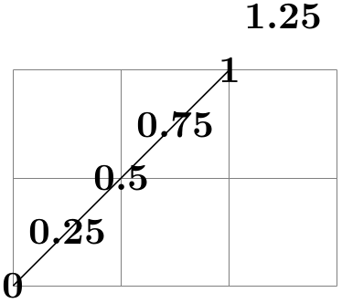
\begin{tikzpicture}
\draw[help lines] (0,0) grid
(3,2);
\pgfpathmoveto{\pgfpointorigin}
\pgfpathlineto{\pgfpoint{2cm}{2cm}}
\pgfusepath{stroke}
\foreach \t in
{0,0.25,...,1.25}
{\pgftext[at=
\pgfpointlineattime{\t}{\pgfpointorigin}{\pgfpoint{2cm}{2cm}}]{\t}}
\end{tikzpicture}
\pgfpointlineatdistance{⟨distance⟩}{⟨start point⟩}{⟨end point⟩} ¶
Yields a point that is located ⟨distance⟩ many units away from the start point in the direction of the end point. In other words, this is the point that results if we travel ⟨distance⟩ steps from ⟨start point⟩ towards ⟨end point⟩.
Example:
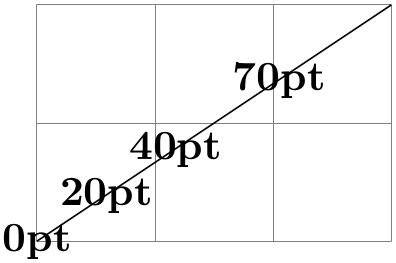
\begin{tikzpicture}
\draw[help lines] (0,0) grid
(3,2);
\pgfpathmoveto{\pgfpointorigin}
\pgfpathlineto{\pgfpoint{3cm}{2cm}}
\pgfusepath{stroke}
\foreach \d in
{0pt,20pt,40pt,70pt}
{\pgftext[at=
\pgfpointlineatdistance{\d}{\pgfpointorigin}{\pgfpoint{3cm}{2cm}}]{\d}}
\end{tikzpicture}
\pgfpointarcaxesattime{⟨time \(t\)⟩}{⟨center⟩}{⟨0-degree axis⟩}{⟨90-degree axis⟩}{⟨start angle⟩}
{⟨end angle⟩}
¶
Yields a point on the arc between ⟨start angle⟩ and ⟨end angle⟩ on an ellipse whose center is at ⟨center⟩ and whose two principal axes are ⟨0-degree axis⟩ and ⟨90-degree axis⟩. For \(t=0\) the point at the ⟨start angle⟩ is returned and for \(t=1\) the point at the ⟨end angle⟩.
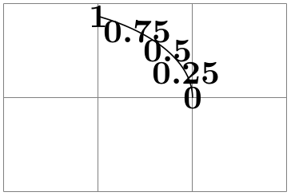
\begin{tikzpicture}
\draw[help lines] (0,0) grid
(3,2);
\pgfpathmoveto{\pgfpoint{2cm}{1cm}}
\pgfpatharcaxes{0}{60}{\pgfpoint{2cm}{0cm}}{\pgfpoint{0cm}{1cm}}
\pgfusepath{stroke}
\foreach \t in
{0,0.25,0.5,0.75,1}
{\pgftext[at=\pgfpointarcaxesattime{\t}{\pgfpoint{0cm}{1cm}}
{\pgfpoint{2cm}{0cm}}{\pgfpoint{0cm}{1cm}}{0}{60}]{\t}}
\end{tikzpicture}
\pgfpointcurveattime{⟨time \(t\)⟩}{⟨point \(p\)⟩}{⟨point \(s_1\)⟩}{⟨point \(s_2\)⟩}{⟨point \(q\)⟩} ¶
Yields a point that is on the Bézier curve from \(p\) to \(q\) with the support points \(s_1\) and \(s_2\). The time \(t\) is used to determine the location, where \(t=0\) yields \(p\) and \(t=1\) yields \(q\).
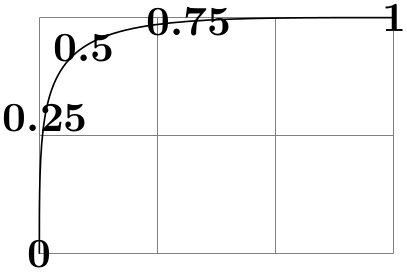
\begin{tikzpicture}
\draw[help lines] (0,0) grid
(3,2);
\pgfpathmoveto{\pgfpointorigin}
\pgfpathcurveto
{\pgfpoint{0cm}{2cm}}{\pgfpoint{0cm}{2cm}}{\pgfpoint{3cm}{2cm}}
\pgfusepath{stroke}
\foreach \t in
{0,0.25,0.5,0.75,1}
{\pgftext[at=\pgfpointcurveattime{\t}{\pgfpointorigin}
Ȁ
class="textcolor" style="color:#0000B2" >\pgfpoint{0cm}{2cm}}
Ȁ
class="textcolor" style="color:#0000B2" >\pgfpoint{0cm}{2cm}}
Ȁ
class="textcolor" style="color:#0000B2" >\pgfpoint{3cm}{2cm}}]{\t}}
\end{tikzpicture}
100.5.3 Points on Borders of Objects¶
The following commands are useful for specifying a point that lies on the border of special shapes. They are used, for example, by the shape mechanism to determine border points of shapes.
\pgfpointborderrectangle{⟨direction point⟩}{⟨corner⟩} ¶
This command returns a point that lies on the intersection of a line starting at the origin and going towards the point ⟨direction point⟩ and a rectangle whose center is in the origin and whose upper right corner is at ⟨corner⟩.
The ⟨direction point⟩ should have length “about 1pt”, but it will be normalized automatically. Nevertheless, the “nearer” the length is to 1pt, the less rounding errors.
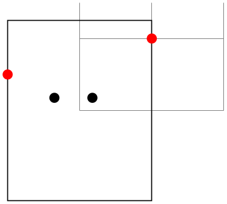
\begin{tikzpicture}
\draw[help lines] (0,0) grid
(2,1.5);
\pgfpathrectanglecorners{\pgfpoint{-1cm}{-1.25cm}}{\pgfpoint{1cm}{1.25cm}}
\pgfusepath{stroke}
\pgfpathcircle{\pgfpoint{5pt}{5pt}}{2pt}
\pgfpathcircle{\pgfpoint{-10pt}{5pt}}{2pt}
\pgfusepath{fill}
\color{red}
\pgfpathcircle{\pgfpointborderrectangle
{\pgfpoint{5pt}{5pt}}{\pgfpoint{1cm}{1.25cm}}}{2pt}
\pgfpathcircle{\pgfpointborderrectangle
{\pgfpoint{-10pt}{5pt}}{\pgfpoint{1cm}{1.25cm}}}{2pt}
\pgfusepath{fill}
\end{tikzpicture}
\pgfpointborderellipse{⟨direction point⟩}{⟨corner⟩} ¶
This command works like the corresponding command for rectangles, only this time the ⟨corner⟩ is the corner of the bounding rectangle of an ellipse.
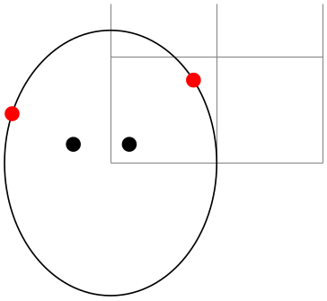
\begin{tikzpicture}
\draw[help lines] (0,0) grid
(2,1.5);
\pgfpathellipse{\pgfpointorigin}{\pgfpoint{1cm}{0cm}}{\pgfpoint{0cm}{1.25cm}}
\pgfusepath{stroke}
\pgfpathcircle{\pgfpoint{5pt}{5pt}}{2pt}
\pgfpathcircle{\pgfpoint{-10pt}{5pt}}{2pt}
\pgfusepath{fill}
\color{red}
\pgfpathcircle{\pgfpointborderellipse
{\pgfpoint{5pt}{5pt}}{\pgfpoint{1cm}{1.25cm}}}{2pt}
\pgfpathcircle{\pgfpointborderellipse
{\pgfpoint{-10pt}{5pt}}{\pgfpoint{1cm}{1.25cm}}}{2pt}
\pgfusepath{fill}
\end{tikzpicture}
100.5.4 Points on the Intersection of Lines¶
\pgfpointintersectionoflines{⟨\(p\)⟩}{⟨\(q\)⟩}{⟨\(s\)⟩}{⟨\(t\)⟩} ¶
This command returns the intersection of a line going through \(p\) and \(q\) and a line going through \(s\) and \(t\). If the lines do not intersection, an arithmetic overflow will occur.
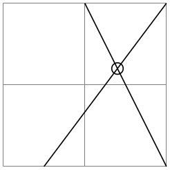
\begin{tikzpicture}
\draw[help lines] (0,0) grid
(2,2);
\draw (.5,0) --
(2,2);
\draw (1,2) --
(2,0);
\pgfpathcircle{%
\pgfpointintersectionoflines
{\pgfpointxy{.5}{0}}{\pgfpointxy{2}{2}}
{\pgfpointxy{1}{2}}{\pgfpointxy{2}{0}}}
{2pt}
\pgfusepath{stroke}
\end{tikzpicture}
100.5.5 Points on the Intersection of Two Circles¶
\pgfpointintersectionofcircles{⟨\(p_1\)⟩}{⟨\(p_2\)⟩}{⟨\(r_1\)⟩}{⟨\(r_2\)⟩}{⟨solution⟩} ¶
This command returns the intersection of the two circles centered at \(p_1\) and \(p_2\) with radii \(r_1\) and \(r_2\). If ⟨solution⟩ is 1, the first intersection is returned, otherwise the second one is returned.
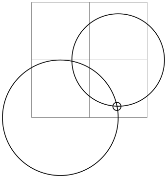
\begin{tikzpicture}
\draw[help lines] (0,0) grid
(2,2);
\draw (0.5,0) circle
(1);
\draw (1.5,1) circle
(.8);
\pgfpathcircle{%
\pgfpointintersectionofcircles
{\pgfpointxy{.5}{0}}{\pgfpointxy{1.5}{1}}
{1cm}{0.8cm}{1}}
{2pt}
\pgfusepath{stroke}
\end{tikzpicture}
100.5.6 Points on the Intersection of Two Paths¶
TikZ Library intersections
\usepgflibrary{intersections} %
LaTeX
and plain
TeX
and pure pgf
\usepgflibrary[intersections] % ConTeXt and pure pgf
\usetikzlibrary{intersections} %
LaTeX
and plain
TeX
when using TikZ
\usetikzlibrary[intersections] % ConTeXt when using TikZ
This library defines the below command and allows you to calculate
the intersections of two arbitrary paths. However, due to the low
accuracy of
TeX, the paths should not be “too complicated”. In
particular, you should not try to intersect paths consisting of
lots of very small segments such as plots or decorated paths.
\pgfintersectionofpaths{⟨path 1⟩}{⟨path 2⟩} ¶
This command finds the intersection points on the paths ⟨path 1⟩ and ⟨path 2⟩. The number of intersection points (“solutions”) that are found will be stored, and each point can be accessed afterward. The code for ⟨path 1⟩ and ⟨path 2⟩ is executed within a TeX group and so can contain transformations (which will be in addition to any existing transformations). The code should not use the path in any way, unless the path is saved first and restored afterward. pgf will regard solutions as “a bit special”, in that the points returned will be “absolute” and unaffected by any further transformations.
\usetikzlibrary {intersections}
\begin{pgfpicture}
\pgfintersectionofpaths
{
\pgfpathellipse{\pgfpointxy{0}{0}}{\pgfpointxy{1}{0}}{\pgfpointxy{0}{2}}
\pgfgetpath\temppath
\pgfusepath{stroke}
\pgfsetpath\temppath
}
{
\pgftransformrotate{-30}
\pgfpathrectangle{\pgfpointorigin}{\pgfpointxy{2}{2}}
\pgfgetpath\temppath
\pgfusepath{stroke}
\pgfsetpath\temppath
}
\foreach \s in
{1,...,\pgfintersectionsolutions}
{\pgfpathcircle{\pgfpointintersectionsolution{\s}}{2pt}}
\pgfusepath{stroke}
\end{pgfpicture}
\pgfintersectionsolutions ¶
After using the \pgfintersectionofpaths command, this TeX-macro will indicate the number of solutions found.
\pgfpointintersectionsolution{⟨number⟩} ¶
After using the \pgfintersectionofpaths command, this command will return the point for solution ⟨number⟩ or the origin if this solution was not found. By default, the intersections are simply returned in the order that the intersection algorithm finds them. Unfortunately, this is not necessarily a “helpful” ordering. However the following two commands can be used to order the solutions more helpfully.
\pgfintersectionsortbyfirstpath ¶
Using this command will mean the solutions will be sorted along ⟨path 1⟩.
\pgfintersectionsortbysecondpath ¶
Using this command will mean the solutions will be sorted along ⟨path 2⟩.
100.6 Extracting Coordinates¶
There are two commands that can be used to “extract” the \(x\)- or \(y\)-coordinate of a coordinate.
\pgfextractx{⟨dimension⟩}{⟨point⟩} ¶
Sets the TeX-⟨dimension⟩ to the \(x\)-coordinate of the point.
\newdimen\mydim
\pgfextractx{\mydim}{\pgfpoint{2cm}{4pt}}
%% \mydim is now 2cm
\pgfextracty{⟨dimension⟩}{⟨point⟩} ¶
Like \pgfextractx, except for the \(y\)-coordinate.
\pgfgetlastxy{⟨macro for \(x\)⟩}{⟨macro for \(y\)⟩} ¶
Stores the most recently used \((x,y)\) coordinates into two macros.
Macro \(x\) is ‘56.9055pt’ and macro \(y\) is ‘113.81102pt’.
\pgfpoint{2cm}{4cm}
\pgfgetlastxy{\macrox}{\macroy}
Macro
$x$
is
`\macrox'
and
macro
$y$
is
`\macroy'.
Since \((x,y)\) coordinates are usually assigned globally, it is safe to use this command after path operations.
100.7 Internals of How Point Commands Work¶
As a normal user of pgf you do not need to read this section. It is relevant only if you need to understand how the point commands work internally.
When a command like \pgfpoint{1cm}{2pt} is called, all that happens is that the two TeX-dimension variables \pgf@x and \pgf@y are set to 1cm and 2pt, respectively. These variables belong to the set of internal pgf registers, see section 116 for details. A command like \pgfpathmoveto that takes a coordinate as parameter will just execute this parameter and then use the values of \pgf@x and \pgf@y as the coordinates to which it will move the pen on the current path.
Since commands like \pgfpointnormalised modify other variables besides \pgf@x and \pgf@y during the computation of the final values of \pgf@x and \pgf@y, it is a good idea to enclose a call of a command like \pgfpoint in a TeX-scope and then make the changes of \pgf@x and \pgf@y global as in the following example:
Since this situation arises very often, the macro \pgf@process can be used to perform the above code:
\pgf@process{⟨code⟩} ¶
Executes the ⟨code⟩ in a scope and then makes \pgf@x and \pgf@y global.
Note that this macro is used often internally. For this reason, it is not a good idea to keep anything important in the variables \pgf@x and \pgf@y since they will be overwritten and changed frequently. Instead, intermediate values can be stored in the TeX-dimensions \pgf@xa, \pgf@xb, \pgf@xc and their y-counterparts \pgf@ya, \pgf@yb, \pgf@yc. For example, here is the code of the command \pgfpointadd:
\def\pgfpointadd#1#2{%
\pgf@process{#1}%
\pgf@xa=\pgf@x%
\pgf@ya=\pgf@y%
\pgf@process{#2}%
\advance\pgf@x by\pgf@xa%
\advance\pgf@y by\pgf@ya}